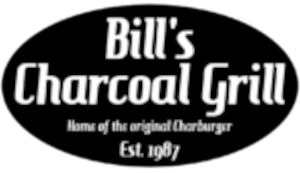

Courtesy of Bill's Charcoal Grill
Bill's Charcoal Grill is a Mexican restaurant with many items of food, most famously a smashed burger with fresh ingredients like lettuce, tomato, pickle, and onion. Other menu items include Chiptle Shrimp with a side of Veggies and Rice and Teriyaki Beef Kababs. They serve ice cold drinks like bottled coke as well as alcoholic beverages. It is a smaller establishment, but that doesn't mean the food isn't absolutely amazing.
Bill's Menu